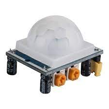
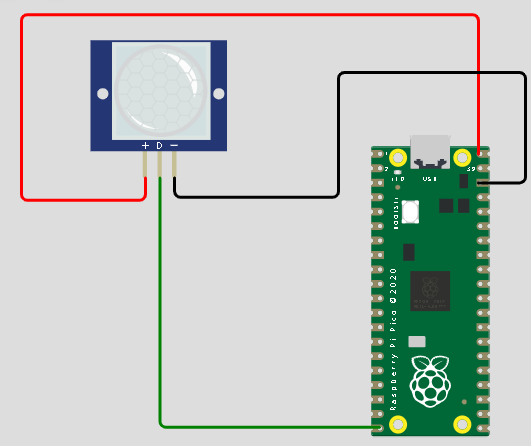
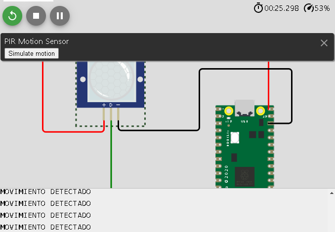

SENSOR MOTION PIR (SENSOR INFRARROJO PASIVO)

¿QUE ES EL SENSOR MOTION PIR (SENSOR INFRARROJO PASIVO)?
El sensor de movimiento PIR (sensor infrarrojo pasivo) es un tipo de sensor que detecta el movimiento de objetos dentro de su campo de visión mediante la detección de la radiación infrarroja que estos emiten.
Estos sensores se utilizan comúnmente en sistemas de seguridad, sistemas de control de iluminación y otros sistemas en los que es importante detectar el movimiento.
¿FUNCIONAMIENTO DEL SENSOR MOTION PIR (SENSOR INFRARROJO PASIVO)?
El funcionamiento de un sensor PIR se basa en el cambio de la temperatura detectado por el sensor cuando un objeto se mueve dentro de su campo de visión.
El sensor está diseñado para detectar el cambio en la radiación infrarroja emitida por los objetos y producir una señal de salida cuando se detecta un movimiento.

¿CARACTERISTICAS DEL(SENSOR INFRARROJO PASIVO)?
CARACTERISTICAS:
- Detección de movimiento
- Inmunidad a los cambios de luz
- Sensibilidad ajustable
- Bajo consumo de energía:
- Fácil instalación
- Retardo ajustable
- Amplia gama de aplicaciones
¿VENTAJAS Y DESVENTAJAS DEL SENSOR PIR (SENSOR INFRARROJO PASIVO)?
El sensor PIR (Passive Infrared) es un tipo de sensor de movimiento que detecta el calor infrarrojo emitido por objetos en su campo de visión.
Estas son algunas ventajas y desventajas del sensor motion PIR:
VENTAJAS:
- Bajo consumo de energía: El sensor PIR utiliza muy poca energía, lo que lo hace ideal para aplicaciones que funcionan con baterías.
- Precisión: El sensor PIR es altamente preciso en la detección de movimiento humano y animal, lo que lo hace ideal para su uso en sistemas de seguridad.
- No requiere luz: El sensor PIR funciona en la oscuridad, lo que lo hace ideal para su uso en sistemas de iluminación automatizados.
- Fácil de instalar: El sensor PIR es fácil de instalar y configurar, lo que lo hace ideal para su uso en aplicaciones domésticas.
DESVENTAJAS:
- Ángulo limitado: El sensor PIR tiene un ángulo de detección limitado, lo que significa que no puede detectar movimiento en un área más amplia.
- No puede detectar objetos estacionarios: El sensor PIR solo puede detectar objetos que se mueven a través de su campo de visión,
lo que significa que no puede detectar objetos estacionarios.
- Vulnerable a interferencias: El sensor PIR puede verse afectado por cambios bruscos de temperatura, como una corriente de aire caliente o frío,
lo que puede generar falsas alarmas o una falta de detección.
- Limitaciones en la detección de distancia: El sensor PIR es limitado en la distancia que puede detectar objetos en movimiento,
lo que significa que no es adecuado para su uso en áreas grandes o espacios abiertos.
APLICACIONES DEL SENSOR PIR (SENSOR INFRARROJO PASIVO)
El sensor PIR (Passive Infrared) es ampliamente utilizado en una variedad de aplicaciones en las que se necesita detectar movimiento.
Algunas de las aplicaciones más comunes del sensor motion PIR son las siguientes:
APLICACIONES:
- Sistemas de seguridad
- Iluminación automática
- Control de energía
- Automatización del hogar
- Publicidad digital
- Monitorización de animales
- Cuidado de ancianos
Ejemplo de codigo utilizando el Sensor PIR en el simulador de Wokwi.com utlizando la Raspberry pi pico 2020
Codigo para el funcionamiento del SENSOR PIR, conectando la salida de respuesta al pin 15.
Interfaz de la conexion RASPBERRY PICO con SENSOR PIR.

< Como el sensor no ha detectado ningun movimiento infrarrojo, la respuesta sigue siendo negativa.

En respuesta a un movimiento, el sensor enviara una alerta por que la respuesta fue positiva.

LINK DEL EJEMPLO EN EL SIMULADOR Wokwi.com UTILIZANDO EL Raspberry pi pico 2020
SIMULADOR RASPBERRY EJEMPLO CON SENSOR PIR